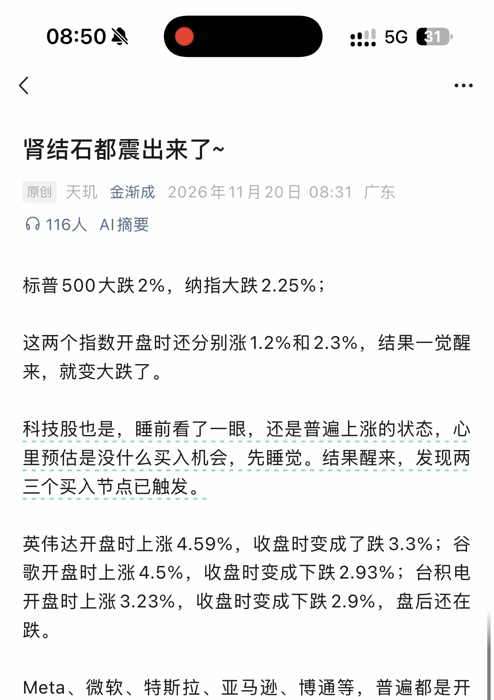
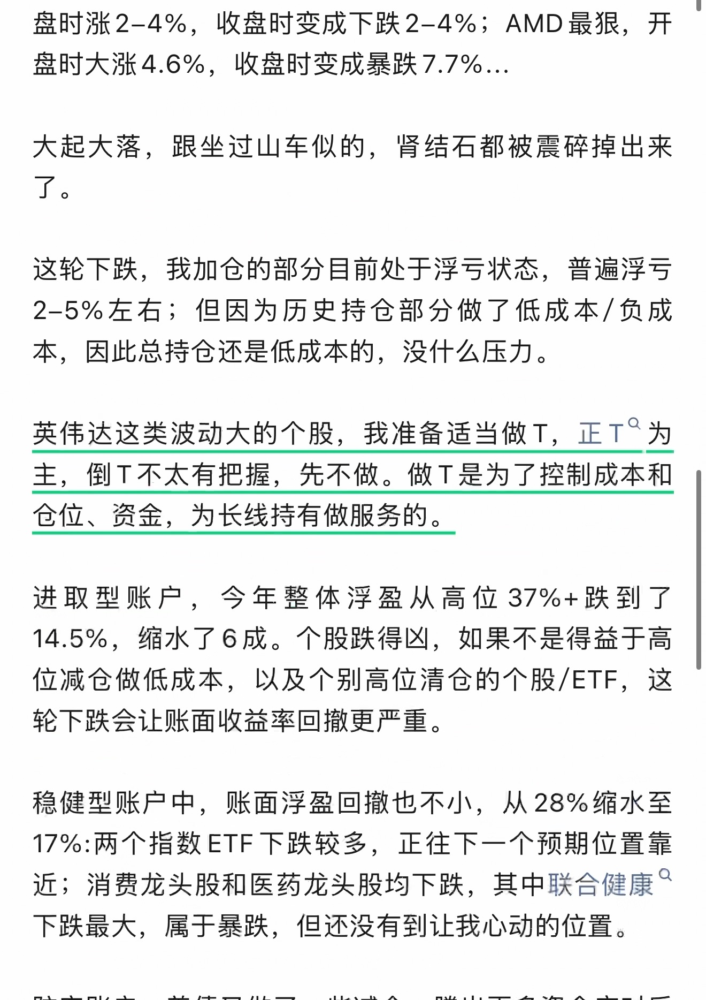
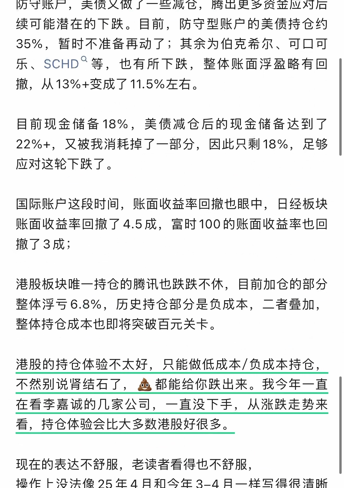
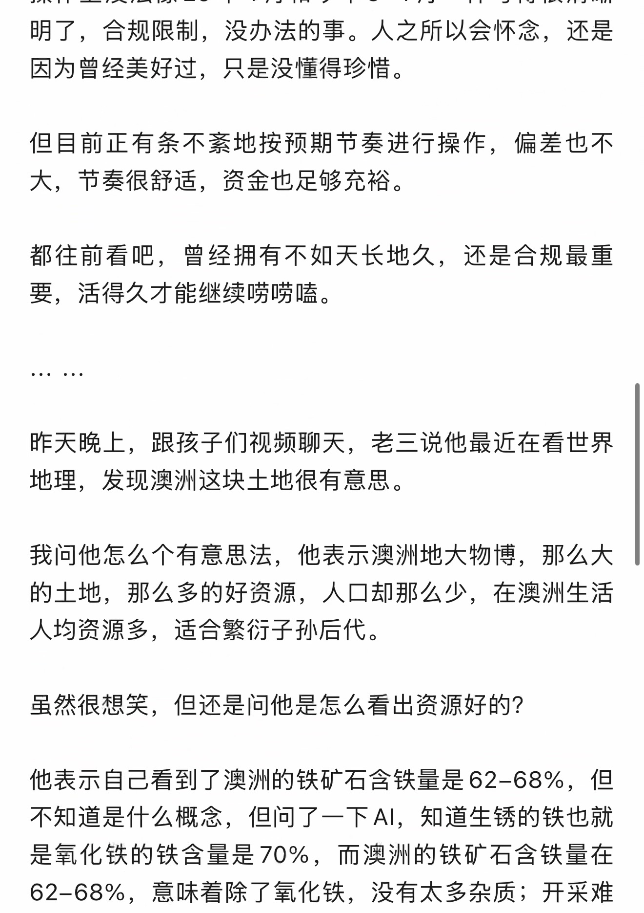
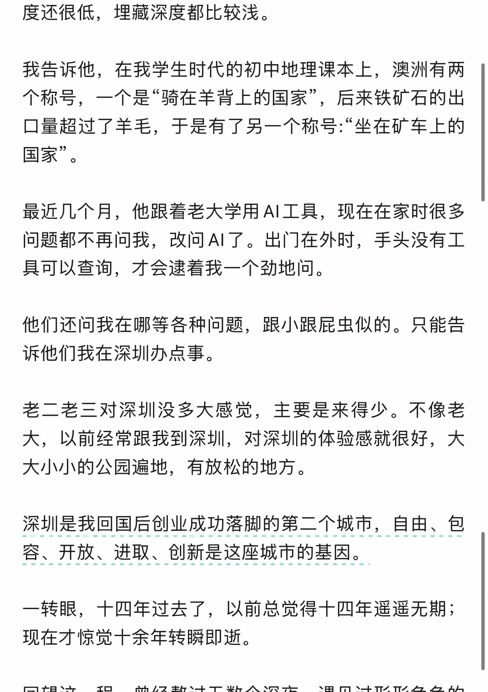
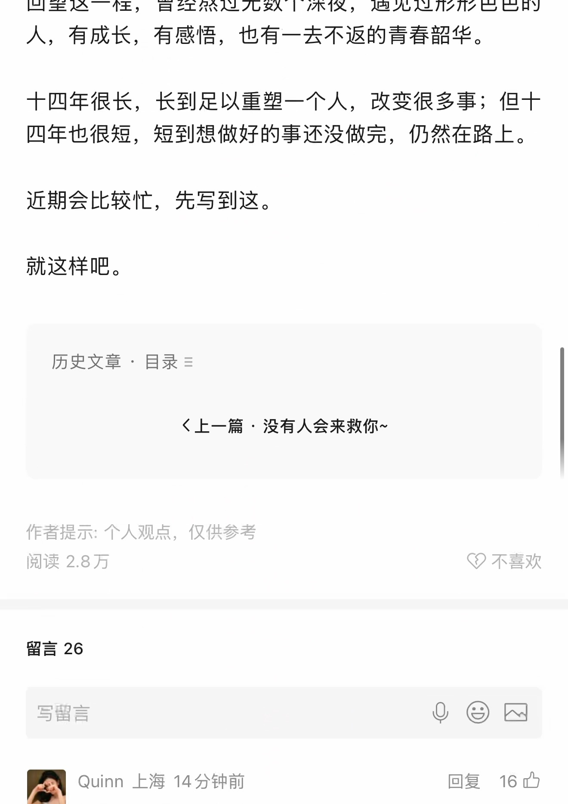
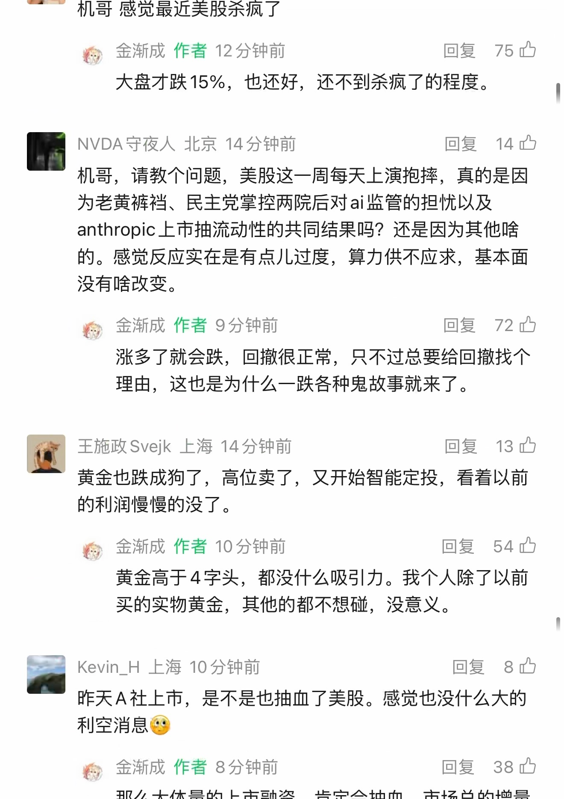
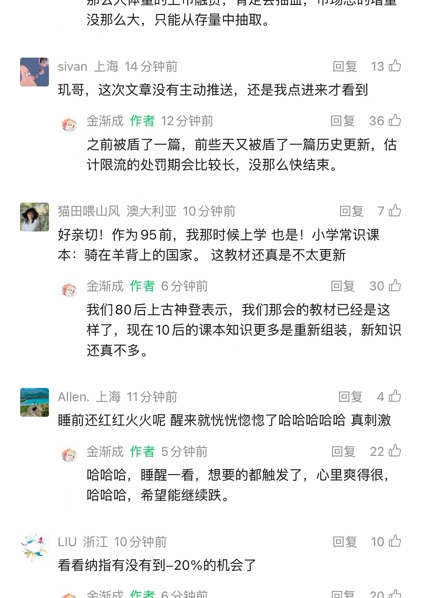
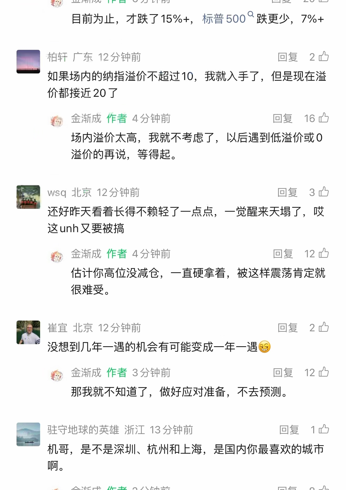
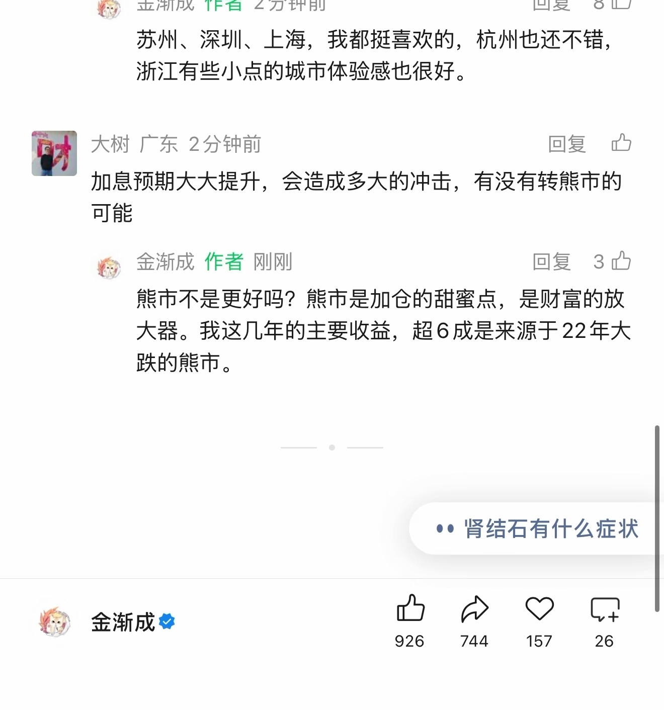

肾结石都震出来了~
识别文字连续阅读 · 原图附后
原始 PDF 不公开，本页展示捕获页面的截图。 识别文字按页序连续显示，全部原始截图附在文末，便于对照。文字由视觉转录整理，尚未经人工逐字核对，可能存在错字、漏字、漏行、顺序或断行错误。留言与作者回复仅限截图中可见的内容，不代表完整线上留言，也未据此推断留言总数。
OCR 识别提示（待核对）
- OCR/视觉转录文字，尚未逐字校对；可能错字、漏字、漏行，数字、姓名、表情、标点及断行也可能有误，请以截图为准。
- 这里只保留 PDF 已截到的正文、留言和作者回复；截图以外的留言不在此存档中。
- 未从截图推断留言总数或回复关系；手机界面文字也可能混入 OCR。
- 方括号中的表情说明是转录注释，原始表情请对照截图。
- 页面边界仅露出少量字形的重复行归到文字主体可见的相邻页；不推断缺失内容。
识别文字
文字按截图页序整理；页边重复行仅保留一次，原始 PDF 不公开。方括号中的表情说明为转录注释。
第 1 页对照原图
[顶部状态栏]
08:50 · 5G · 电量31%
肾结石都震出来了~
原创 天玑 金渐成 2026年11月20日 08:31 广东
116人 AI摘要
标普500大跌2%，纳指大跌2.25%；
这两个指数开盘时还分别涨1.2%和2.3%，结果一觉醒来，就变大跌了。
科技股也是，睡前看了一眼，还是普遍上涨的状态，心里预估是没什么买入机会，先睡觉。结果醒来，发现两三个买入节点已触发。
英伟达开盘时上涨4.59%，收盘时变成了跌3.3%；谷歌开盘时上涨4.5%，收盘时变成下跌2.93%；台积电开盘时上涨3.23%，收盘时变成下跌2.9%，盘后还在跌。
Meta、微软、特斯拉、亚马逊、博通等，普遍都是开
第 2 页对照原图
盘时涨2-4%，收盘时变成下跌2-4%；AMD最狠，开盘时大涨4.6%，收盘时变成暴跌7.7%...
大起大落，跟坐过山车似的，肾结石都被震碎掉出来了。
这轮下跌，我加仓的部分目前处于浮亏状态，普遍浮亏2-5%左右；但因为历史持仓部分做了低成本/负成本，因此总持仓还是低成本的，没什么压力。
英伟达这类波动大的个股，我准备适当做T，正T为主，倒T不太有把握，先不做。做T是为了控制成本和仓位、资金，为长线持有做服务的。
进取型账户，今年整体浮盈从高位37%+跌到了14.5%，缩水了6成。个股跌得凶，如果不是得益于高位减仓做低成本，以及个别高位清仓的个股/ETF，这轮下跌会让账面收益率回撤更严重。
稳健型账户中，账面浮盈回撤也不小，从28%缩水至17%:两个指数ETF下跌较多，正往下一个预期位置靠近；消费龙头股和医药龙头股均下跌，其中联合健康下跌最大，属于暴跌，但还没有到让我心动的位置。
第 3 页对照原图
防守账户，美债又做了一些减仓，腾出更多资金应对后续可能潜在的下跌。目前，防守型账户的美债持仓约35%，暂时不准备再动了；其余为伯克希尔、可口可乐、SCHD等，也有所下跌，整体账面浮盈略有回撤，从13%+变成了11.5%左右。
目前现金储备18%，美债减仓后的现金储备达到了22%+，又被我消耗掉了一部分，因此只剩18%，足够应对这轮下跌了。
国际账户这段时间，账面收益率回撤也眼中，日经板块账面收益率回撤了4.5成，富时100的账面收益率也回撤了3成；
港股板块唯一持仓的腾讯也跌跌不休，目前加仓的部分整体浮亏6.8%，历史持仓部分是负成本，二者叠加，整体持仓成本也即将突破百元关卡。
港股的持仓体验不太好，只能做低成本/负成本持仓，不然别说肾结石了，💩都能给你跌出来。我今年一直在看李嘉诚的几家公司，一直没下手，从涨跌走势来看，持仓体验会比大多数港股好很多。
现在的表达不舒服，老读者看得也不舒服，
操作上没法像25年4月和今年3-4月一样写得很清晰
第 4 页对照原图
明了，合规限制，没办法的事。人之所以会怀念，还是因为曾经美好过，只是没懂得珍惜。
但目前正有条不紊地按预期节奏进行操作，偏差也不大，节奏很舒适，资金也足够充裕。
都往前看吧，曾经拥有不如天长地久，还是合规最重要，活得久才能继续唠唠嗑。
… …
昨天晚上，跟孩子们视频聊天，老三说他最近在看世界地理，发现澳洲这块土地很有意思。
我问他怎么个有意思法，他表示澳洲地大物博，那么大的土地，那么多的好资源，人口却那么少，在澳洲生活人均资源多，适合繁衍子孙后代。
虽然很想笑，但还是问他是怎么看出资源好的？
他表示自己看到了澳洲的铁矿石含铁量是62-68%，但不知道是什么概念，但问了一下AI，知道生锈的铁也就是氧化铁的铁含量是70%，而澳洲的铁矿石含铁量在62-68%，意味着除了氧化铁，没有太多杂质；开采难
第 5 页对照原图
度还很低，埋藏深度都比较浅。
我告诉他，在我学生时代的初中地理课本上，澳洲有两个称号，一个是“骑在羊背上的国家”，后来铁矿石的出口量超过了羊毛，于是有了另一个称号:“坐在矿车上的国家”。
最近几个月，他跟着老大学用AI工具，现在在家时很多问题都不再问我，改问AI了。出门在外时，手头没有工具可以查询，才会逮着我一个劲地问。
他们还问我在哪等各种问题，跟小跟屁虫似的。只能告诉他们我在深圳办点事。
老二老三对深圳没多大感觉，主要是来得少。不像老大，以前经常跟我到深圳，对深圳的体验感就很好，大大小小的公园遍地，有放松的地方。
深圳是我回国后创业成功落脚的第二个城市，自由、包容、开放、进取、创新是这座城市的基因。
一转眼，十四年过去了，以前总觉得十四年遥遥无期；现在才惊觉十余年转瞬即逝。
第 6 页对照原图
回望这一程，曾经熬过无数个深夜，遇见过形形色色的人，有成长，有感悟，也有一去不返的青春韶华。
十四年很长，长到足以重塑一个人，改变很多事；但十四年也很短，短到想做好的事还没做完，仍然在路上。
近期会比较忙，先写到这。
就这样吧。
[文章导航与提示]
历史文章 · 目录
< 上一篇 · 没有人会来救你~
作者提示：个人观点，仅供参考
阅读 2.8万 · 不喜欢
留言 26
[留言 1]
Quinn｜上海｜14分钟前｜赞16
第 7 页对照原图
机哥 感觉最近美股杀疯了
[作者回复留言 1]
金渐成（作者）｜12分钟前｜赞75
大盘才跌15%，也还好，还不到杀疯了的程度。
[留言 2]
NVDA守夜人｜北京｜14分钟前｜赞14
机哥，请教个问题，美股这一周每天上演抱摔，真的是因为老黄裤裆、民主党掌控两院后对ai监管的担忧以及anthropic上市抽流动性的共同结果吗？还是因为其他啥的。感觉反应实在是有点儿过度，算力供不应求，基本面没有啥改变。
[作者回复留言 2]
金渐成（作者）｜9分钟前｜赞72
涨多了就会跌，回撤很正常，只不过总要给回撤找个理由，这也是为什么一跌各种鬼故事就来了。
[留言 3]
王施政Svejk｜上海｜14分钟前｜赞13
黄金也跌成狗了，高位卖了，又开始智能定投，看着以前的利润慢慢的没了。
[作者回复留言 3]
金渐成（作者）｜10分钟前｜赞54
黄金高于4字头，都没什么吸引力。我个人除了以前买的实物黄金，其他的都不想碰，没意义。
[留言 4]
Kevin_H｜上海｜10分钟前｜赞8
昨天A社上市，是不是也抽血了美股。感觉也没什么大的利空消息[疑问表情]
[作者回复留言 4]
金渐成（作者）｜8分钟前｜赞38
那么大体量的上市融资，肯定会抽血，市场总的增量
第 8 页对照原图
没那么大，只能从存量中抽取。
[留言 5]
sivan｜上海｜14分钟前｜赞13
玑哥，这次文章没有主动推送，还是我点进来才看到
[作者回复留言 5]
金渐成（作者）｜12分钟前｜赞36
之前被盾了一篇，前些天又被盾了一篇历史更新，估计限流的处罚期会比较长，没那么快结束。
[留言 6]
猫田喂山风｜澳大利亚｜10分钟前｜赞7
好亲切！作为95前，我那时候上学 也是！小学常识课本：骑在羊背上的国家。 这教材还真是不太更新
[作者回复留言 6]
金渐成（作者）｜6分钟前｜赞30
我们80后上古神登表示，我们那会的教材已经是这样了，现在10后的课本知识更多是重新组装，新知识还真不多。
[留言 7]
Allen.｜上海｜11分钟前｜赞4
睡前还红红火火呢 醒来就恍恍惚惚了哈哈哈哈哈 真刺激
[作者回复留言 7]
金渐成（作者）｜5分钟前｜赞22
哈哈哈，睡醒一看，想要的都触发了，心里爽得很，哈哈哈，希望能继续跌。
[留言 8]
LIU｜浙江｜10分钟前｜赞10
看看纳指有没有到-20%的机会了
第 9 页对照原图
[作者回复留言 8]
金渐成（作者）｜6分钟前｜赞20
目前为止，才跌了15%+，标普500跌更少，7%+
[留言 9]
柏轩｜广东｜12分钟前｜赞2
如果场内的纳指溢价不超过10，我就入手了，但是现在溢价都接近20了
[作者回复留言 9]
金渐成（作者）｜4分钟前｜赞16
场内溢价太高，我就不考虑了，以后遇到低溢价或0溢价的再说，等得起。
[留言 10]
wsq｜北京｜12分钟前｜赞3
还好昨天看着长得不赖轻了一点点，一觉醒来天塌了，哎这unh又要被搞
[作者回复留言 10]
金渐成（作者）｜4分钟前｜赞12
估计你高位没减仓，一直硬拿着，被这样震荡肯定就很难受。
[留言 11]
崔宜｜北京｜12分钟前｜赞2
没想到几年一遇的机会有可能变成一年一遇[奸笑表情]
[作者回复留言 11]
金渐成（作者）｜3分钟前｜赞12
那我就不知道了，做好应对准备，不去预测。
[留言 12]
驻守地球的英雄｜浙江｜13分钟前｜赞1
机哥，是不是深圳、杭州和上海，是国内你最喜欢的城市啊。
第 10 页对照原图
[作者回复留言 12]
金渐成（作者）｜2分钟前｜赞8
苏州、深圳、上海，我都挺喜欢的，杭州也还不错，浙江有些小点的城市体验感也很好。
[留言 13]
大树｜广东｜2分钟前
加息预期大大提升，会造成多大的冲击，有没有转熊市的可能
[作者回复留言 13]
金渐成（作者）｜刚刚｜赞3
熊市不是更好吗？熊市是加仓的甜蜜点，是财富的放大器。我这几年的主要收益，超6成是来源于22年大跌的熊市。
[底部界面]
金渐成（认证标记）
点赞 926 · 分享 744 · 喜欢 157 · 留言 26
原始图片 · 10 页
第 1 页 · 原始截图


第 2 页 · 原始截图


第 3 页 · 原始截图


第 4 页 · 原始截图


第 5 页 · 原始截图


第 6 页 · 原始截图


第 7 页 · 原始截图


第 8 页 · 原始截图


第 9 页 · 原始截图


第 10 页 · 原始截图


按日期浏览全部来源（同日按条目标识排序）
回到页首